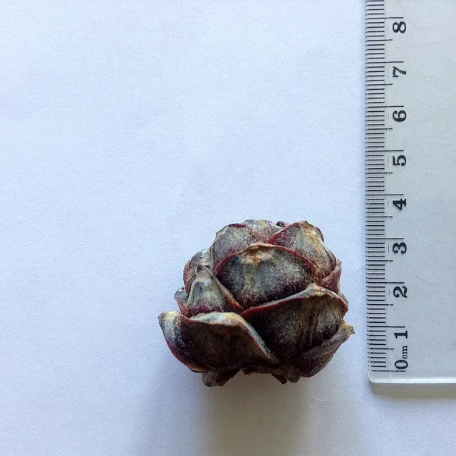

Swiss stone pine nuts
Swiss stone pine nuts is a wild nut you can forage from September to October in Alps. High-alpine pine with needles in fives and squat purple cones holding large wingless seeds.

When is Swiss stone pine nuts in season in Switzerland?
Swiss stone pine nuts is usually in season September to October. Timing shifts with weather, latitude and altitude.
Where does Swiss stone pine nuts grow in Switzerland?
Swiss stone pine nuts grows in Appenzell Ausserrhoden, Appenzell Innerrhoden, Bern, Fribourg, Glarus, Graubünden, Lucerne, Nidwalden, Obwalden, Schwyz, St. Gallen, Ticino, Uri, Valais, Vaud. Regions: Alps.
How do you recognise Swiss stone pine nuts?
High-alpine pine with needles in fives and squat purple cones holding large wingless seeds.
How do you harvest Swiss stone pine nuts?
Gather nuts from the ground once they fall, discarding any with holes or mould. Leave plenty for wildlife, which depends on them for winter.
How do you eat Swiss stone pine nuts?
Toasted nuts, Zirbe liqueur and syrup.
How do you store Swiss stone pine nuts?
Dry.
What is Swiss stone pine nuts good for?
Fat, Protein, Calories.